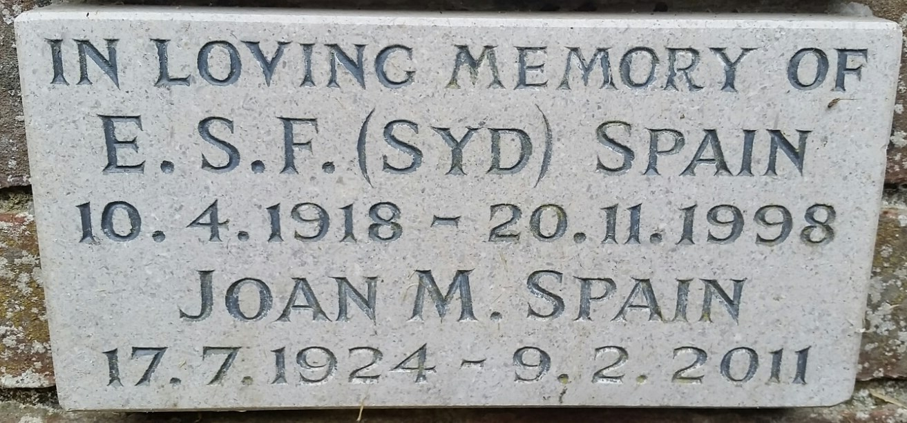
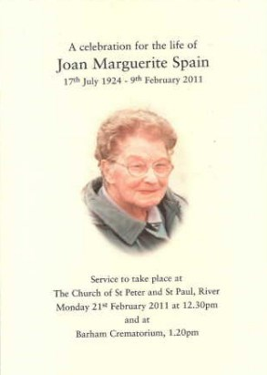
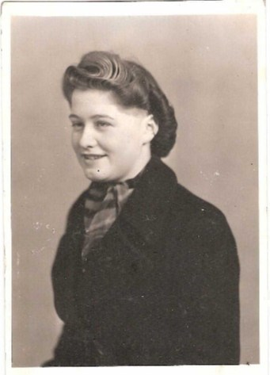
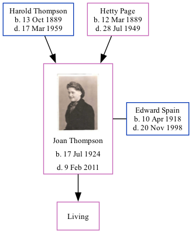

Joan Marguerite Spain (née Thompson) 1924 - 2011
[ Home ] | [ Calendar ] | [ Surnames Index ] | [ Family History ]The daughter of Harold Thompson (a cowman on a farm) and Hetty Page, Joan Thompson, the fourth cousin on the father's side of <a href="I1.html">Nigel Horne</a>, was born in Dover, Kent, England on Jul 17, 1924<span class="citation">1,2,3</span> and. She married Edward Spain (with whom she had 1 surviving child) in Temple Ewell, Kent, England on Aug 8, 1945<span class="citation">4</span>. On Sep 29, 1939, she lived at The Bungalow in Temple Ewell<span class="citation">1</span>. <p>She died on Feb 9, 2011 in Walmer, Kent<span class="citation">3</span> and was buried at St Peter and St Paul's Church, Minnis Lane, River, Kent after Feb 9, 2011.
Parents
- Harold William was born on Oct 13, 1889
- Hetty Camelia was born on Mar 12, 1889
Citations
- 1939 Register - Findmypast (was the daughter of the head of the household)
- England & Wales births 1837-2006 - Findmypast
- England Billion Graves cemetery index - Findmypast
- England & Wales Marriages 1837-2005 - Findmypast
Media
Spain - Thomson - Gravestone

Dover Express - 17 Aug 1945

Joan Thompson - a celebration of her life

Joan Marguerite Thompson

England & Wales marriages 1837-2008 - BMD/M/1945/3/AZ/001659/109
England & Wales births 1837-2006 - BMD/B/1924/4/AZ/001243/098
1939 Register Transcription - TNA-R39-1815-1815H-015-34
England Billion Graves cemetery index - US/BMD/BILLION/5/000028149446
Family Tree
Generated by Ged2Site. Last updated on Jul 20, 2025